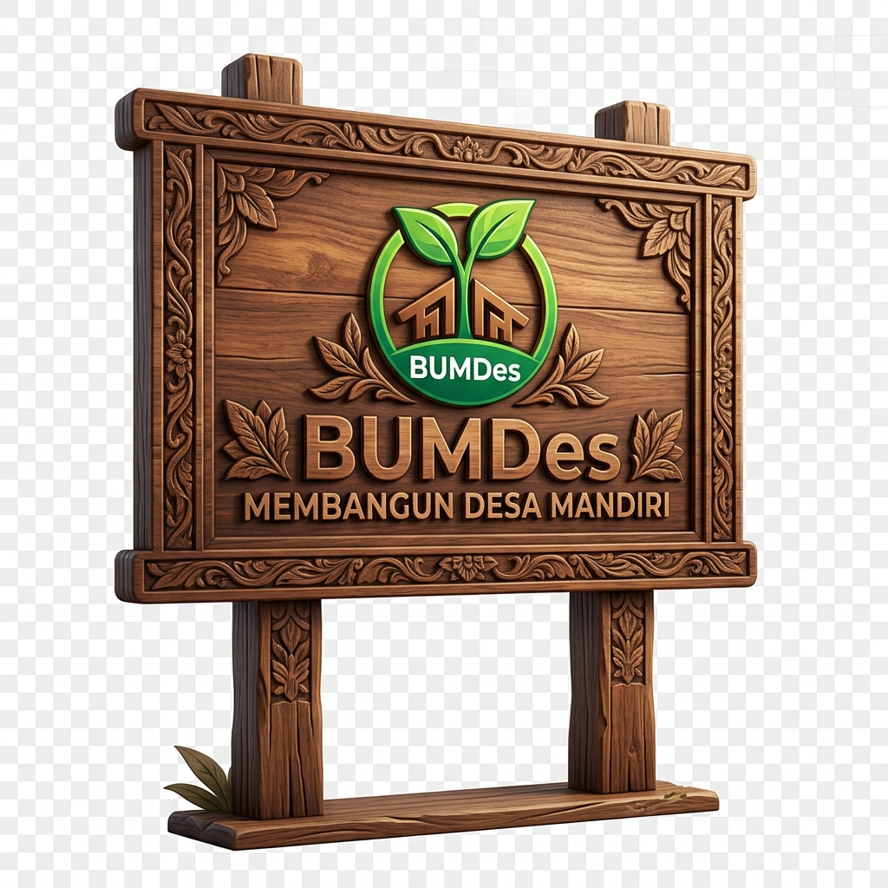
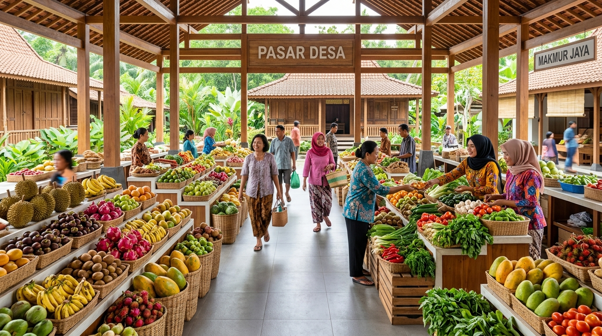
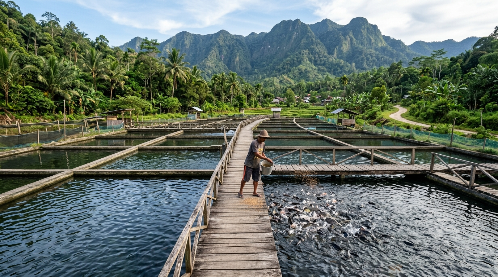
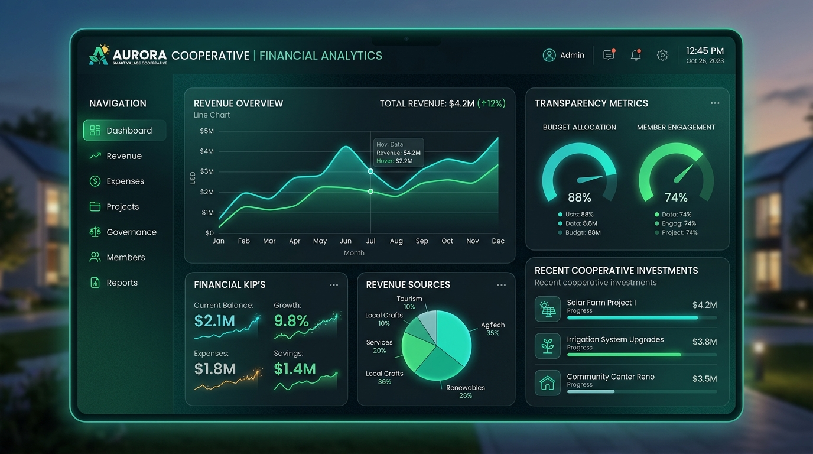

FILOSOFI KAMI

Membangun Desa Mandiri melalui pengelolaan pasar rakyat yang berdaya saing dan perikanan air tawar yang berkelanjutan.
UNIT USAHA UNGGULAN
PASAR DESA
Retribusi harian dan sewa kios niaga pedagang.
PERIKANAN AIR
Budidaya ikan nila 1.200 m² kolam Rawa Bangun.
PERTANIAN
Hasil bumi buah durian & langsat Batetangnga.
PPAK KEUANGAN
Sistem akuntansi kas & PADes terpadu online.
TRANSPARANSI KEUANGAN
Realtime PPAK
Penyertaan Modal Desa (PMD)
Rp 78.176.600
Total Aset BUMDes
Rp 107.615.936
STATISTIK DESA
Data Terverifikasi20
Kios Pasar Aktif
15.000
Benih Ikan Nila
50%
Alokasi PADes
Penyertaan Modal Desa dari APBDes
02 Jan 2026 • Bank BPD Sulbar
+Rp 78.176.600
Pembelian Benih Ikan Nila 15.000 Ekor
10 Jan 2026 • Kolam Rawa Bangun
-Rp 22.500.000
Pengadaan Mesin Kincir Air Kolam
15 Jan 2026 • Peralatan Usaha
-Rp 6.890.000
KABAR DESA TERBARU
Lihat Semua BeritaGALERI KEGIATAN



Tentang Kami
Profil BUMDes Sipodalle Batetangnga Sejahtera
Kecamatan Binuang, Kabupaten Polewali Mandar, Provinsi Sulawesi Barat.
Badan Usaha Milik Desa Batetangnga
Sinergi Pasar Desa & Budidaya Perikanan Unggul
BUMDes Sipodalle Batetangnga Sejahtera hadir sebagai motor penggerak ekonomi kerakyatan di Desa Batetangnga. Kami memadukan pengelolaan Pasar Desa sebagai pusat sentra jual-beli hasil bumi dan buah-buahan lokal dengan pengembangan budidaya pembesaran ikan nila air tawar alami.
Dengan tata kelola yang transparan, didukung pencatatan akuntansi digital (PPAK), kami bertekad memaksimalkan Pendapatan Asli Desa (PADes) guna mewujudkan kemakmuran seluruh masyarakat Batetangnga.
Badan Hukum Resmi Kemenkumham RI
SK No. AHU-01166.AH.01.33.TAHUN 2023
Visi Kami
"Menjadi badan usaha desa yang unggul, profesional, dan transparan dalam menggerakkan ekonomi masyarakat melalui optimalisasi potensi pasar desa dan sentra budidaya perikanan air tawar yang berdaya saing."
Misi Utama
- 1 Mengelola Pasar Desa Batetangnga secara modern, higienis, tertib, dan berkeadilan bagi pedagang.
- 2 Mengembangkan sentra pembesaran ikan nila berkualitas tinggi dengan air pegunungan yang melimpah.
- 3 Menerapkan transparansi tata kelola keuangan digital melalui Sistem Informasi Akuntansi PPAK BUMDes.
- 4 Meningkatkan Pendapatan Asli Desa (PADes) serta membuka peluang kerja dan kemitraan bagi warga.
- 5 Membangun rantai pasok pemasaran hasil perikanan dan komoditas pasar ke tingkat regional.
Tata Kelola & Kelembagaan
Struktur Organisasi BUMDes Sipodalle
Bagan hierarki tata kelola sesuai Peraturan Pemerintah No. 11 Tahun 2021 dan AD/ART BUMDes Batetangnga Sejahtera.
MUSYAWARAH DESA (MUSDES)
Forum Pengambilan Keputusan Tertinggi BUMDes
PENASIHAT BUMDES
SUMAILA DAMANG (Kepala Desa)
Koordinasi & Pengawasan
BADAN PENGAWAS
HARISI
DIREKTUR UTAMA BUMDES
BUSTAMIN B
SEKRETARIS
SRI WAHYUNI S.AP
MANAGER UNIT PASAR DESA
M. YUSUF S.Sos
MANAGER UNIT IKAN NILA
KURNIAWAN S.Pi
BENDAHARA & AKUNTANSI
MASYHUDDIN S
BAGIAN ADMINISTRASI & UMUM
RAHMAT HIDAYAT
BAGIAN OPERASIONAL
BUDI SANTOSO
BAGIAN PEMASARAN
ANDI NURFADILAH S.E
Profil Lengkap & Rincian Tugas Pokok Pengurus BUMDes
Lini Bisnis
Rincian Unit Usaha Aktif
Profil mendalam 2 unit usaha utama yang dikelola BUMDes Sipodalle Batetangnga Sejahtera.
Informasi Terkini
Kabar & Publikasi BUMDes
Informasi seputar aktivitas pasar desa, panen budidaya ikan nila, dan capaian BUMDes Sipodalle.
Agenda & Dokumentasi
Kegiatan BUMDes Sipodalle
Jadwal penebaran bibit ikan nila, koordinasi pedagang pasar, dan kegiatan pemeliharaan sarana desa.
Transparansi & Akuntabilitas
Laporan Keuangan & Integrasi PPAK
Data laporan keuangan publik BUMDes Sipodalle terhubung langsung ke Sistem PPAK Google Apps Script.
Terhubung Langsung ke Sistem Pelaporan PPAK
PPAK BUM Desa Sipodalle Batetangnga Sejahtera
Aplikasi berbasis cloud untuk input jurnal transaksi harian, buku besar, neraca saldo, laba rugi 2 unit usaha (Pasar Desa & Budidaya Ikan Nila), hingga proses tutup buku tahunan.
Link Endpoint Google Apps Script:
Live & Terkoneksi
https://script.google.com/macros/s/AKfycbyWAjcU3O2Z6rjZjg3gZsyrpj9YA93npKDt2mlCxDqnG85Sr3zRmYRQLKRb64YtZQw9VA/exec
Tren Pendapatan Pasar, Ikan Nila & Laba 2026
Jurnal Riil BUMDesRasio Omzet 2 Unit Usaha
Tahun 2026Alokasi Pembagian Hasil Usaha Sesuai AD/ART Desa Batetangnga
PADes 50% (Rp 104 Jt)Laporan Laba/Rugi 2 Unit Usaha
Tahun Buku 2026| Komponen Pendapatan & Beban | Nominal (IDR) |
|---|
Neraca Ringkas Posisi Keuangan
Posisi Terkini| Pos Aset / Kewajiban & Ekuitas | Nilai (IDR) |
|---|
Unduh Berkas Laporan Publik BUMDes
Unduh rekapan laporan keuangan untuk dokumen Musdes atau pertanggungjawaban warga.